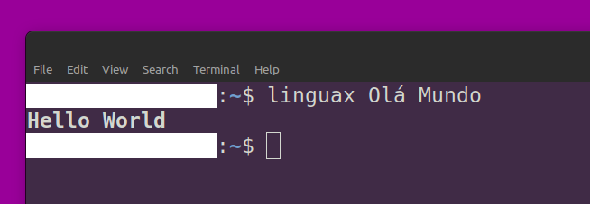
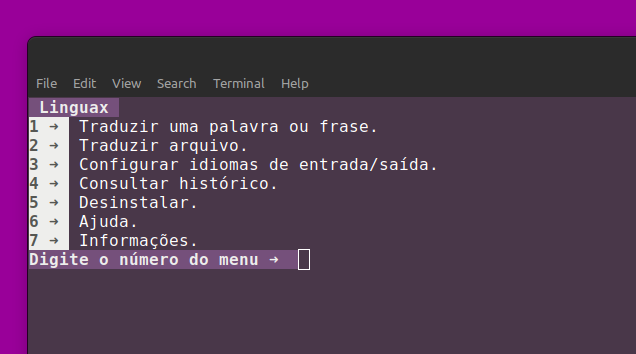

Instalação
Para instalar o programa execute o comando:
(É necessário a inserir a senha de super-usuário)
Execução
Modo Simples
Para utilizar o programa execute o comando linguax seguido da palavra ou frase a ser traduzida, como no exemplo abaixo:
linguax olá mundo
Copiar?
Saída ➜ Texto: "hello world".

Para que isso seja executado de modo eficiente e correto defina os idiomas de entrada/saída.
Modo Comum
Para a tradução de modo comum, utilize o comando:
linguax
Copiar?
Saída ➜ Menu de seleção.

Selecione Traduzir uma palavra ou frase (tecla 1 no menu), informar o idioma de entrada seguindo o código de cada idioma suportado pelo sistema ou deixar vazio para detecção automática, após isso informar o idioma de saída ou deixar vazio para selecionar o idioma salvo em perfil, e por fim descrever a palavra ou frase para ser traduzida.
Traduzir Arquivo
Para realizar a tradução de um arquivo de texto, deve ser selecionado o item 2 no menu de opções. É necessário fornecer o endereço do arquivo desejado. Posteriormente, o conteúdo é traduzido e um novo arquivo é gerado no mesmo diretório, mantendo o mesmo nome, porém acrescentando _linguax. A tradução é realizada para o idioma previamente definido no perfil do usuário.
Configurar Idiomas
Para a configuração de idiomas, no menu deve ser selecionado o item 3, Configurar idiomas de entrada/saída.
Idioma de entrada ➜
No início será questionado o idioma de entrada das palavras e frases que serão processadas, o idioma deve seguir a formatação correta mostrada na tabela abaixo, caso deixar esse valor vazio, o idioma de entrada será uma detecção automática do sistema.
Idioma de saída ➜
A segunda questão é sobre o idioma de saída das palavras e frases que serão processadas, o idioma deve seguir a formatação correta mostrada na tabela abaixo, caso deixar esse valor vazio, o idioma de saída será o idioma pré-definido nas traduções anteriores, se for a primeira, o idioma atual do sistema operacional.
Idioma de interface ➜
A terceira questão é sobre o idioma da interface do sistema, o idioma deve seguir a formatação correta mostrada na tabela abaixo, caso deixar esse valor vazio, o idioma de saída será o idioma atual do sistema operacional.
Lista de idiomas suportados:
| Idioma |
Código |
| Africâner | af |
| Albanês | sq |
| Amárico | am |
| Árabe | ar |
| Armênio | hy |
| Azerbaijano | az |
| Bengali | bn |
| Bielorrusso | be |
| Bósnio | bs |
| Búlgaro | bg |
| Catalão | ca |
| Checo | cs |
| Chinês (Simplificado) | zh |
| Chinês (Tradicional) | zh-TW |
| Croata | hr |
| Dinamarquês | da |
| Eslovaco | sk |
| Esloveno | sl |
| Espanhol | es |
| Estoniano | et |
| Finlandês | fi |
| Francês | fr |
| Georgiano | ka |
| Alemão | de |
| Grego | el |
| Hebraico | he |
| Hindi | hi |
| Holandês | nl |
| Húngaro | hu |
| Indonésio | id |
| Inglês | en |
| Italiano | it |
| Japonês | ja |
| Letão | lv |
| Lituano | lt |
| Macedônio | mk |
| Malaio | ms |
| Maltês | mt |
| Nepalês | ne |
| Norueguês | no |
| Persa | fa |
| Polonês | pl |
| Português | pt |
| Punjabi | pa |
| Romeno | ro |
| Russo | ru |
| Sérvio | sr |
| Sueco | sv |
| Tailandês | th |
| Tâmil | ta |
| Tcheco | cs |
| Telugu | te |
| Turco | tr |
| Ucraniano | uk |
| Urdu | ur |
| Vietnamita | vi |
| Galês | cy |
| Xhosa | xh |
| Iídiche | yi |
| Ioruba | yo |
| Zulu | zu |
Consultar histórico
No histórico, pressionando a tecla 4 no menu de opções, é exibida uma tabela contendo todas as traduções realizadas com a aplicação, tanto no Modo Simples quanto no Modo Comum, apresentando as seguintes informações: Data/Hora, Texto de Entrada, Texto de Saída e Idioma de Saída. Um exemplo dessa tabela é mostrado abaixo:
| Data/Hora |
Texto Entrada |
Texto Saída |
Idioma Saída |
| 2023-12-01 15:30:00 |
Hello, how are you? |
Hola, ¿cómo estás? |
es |
| 2023-10-05 16:45:00 |
Bonjour, comment ça va? |
Hello, how are you? |
en |
Nessa tabela fictícia, cada linha representa uma tradução realizada, exibindo a data e a hora da operação, o texto de entrada, o texto resultante e o idioma de saída correspondente.
A aplicação cria documentos de texto no diretório ~/.linguax/ do tipo JSON e XLSX mostrando essas informações.
Desinstalar
Para remover a aplicação Linguax selecione a opção Desinstalar na seção 5 no menu de opções. Assim será questionado a confirmação para a remoção:
- 1 ➜ Sim, desinstalar (É necessário a inserir a senha de super-usuário).
- 2 ➜ Não, voltar ao menu.
Ao selecionar a remoção os seguintes itens serão removidos:
- Script de inicialização da aplicação:
/bin/linguax.
- Diretório
~/.linguax/* contendo o script de tradução, dados salvos de perfil e histórico de traduções.
Ajuda
Nessa seção é apresentado a lista de idiomas e seus respectivos códigos, o Modo Simples e o Modo Comum para o usuário.
Os parâmetros disponíveis e a documentação:
| Descrição |
Comando |
Mostrar ajuda ➜
-a ou --ajuda |
linguax --ajuda
Copiar? |
Traduzir arquivo ➜
-t [endereço de arquivo] ou --texto [endereço de arquivo] |
linguax --texto ~/Documentos/arquivo.txt
Copiar? |
Informações
Nas informações são apresentadas a versão da aplicação Linguax, além do diretório online GitHub.